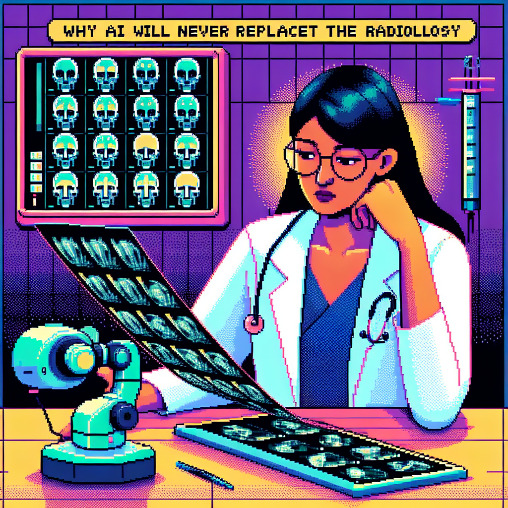

Why AI will never replace the radiologist
In today's rapidly advancing technological landscape, the integration of artificial intelligence (AI) in various fields is becoming more prevalent. One area that has seen significant attention is the use of machine learning in radiology. Radiologists play a crucial role in interpreting medical images and diagnosing patients, but there is ongoing debate about the extent to which AI can replace or augment their work.
As a Python instructor with a focus on machine learning, I have a unique perspective on this issue. In my recent blog post, titled "Why AI will never replace the radiologist," I delve into the potential drawbacks of relying solely on AI in radiology.
While AI has shown remarkable capabilities in image recognition and pattern analysis, there are certain nuances in medical imaging that require human expertise. Radiologists not only interpret images but also consider a patient's medical history, symptoms, and other factors when making a diagnosis. This holistic approach to patient care is challenging to replicate with AI alone.
Furthermore, the complex nature of medical imaging means that errors or biases in AI algorithms can have serious consequences for patient outcomes. Radiologists undergo extensive training to develop their diagnostic skills and are equipped to handle ambiguous or atypical cases that may confound AI systems.
In my post, I emphasize the importance of viewing AI as a tool to assist radiologists rather than a replacement for their expertise. By leveraging AI to streamline image analysis, radiologists can focus their attention on more complex cases and provide better care to patients.
As technology continues to evolve, the role of radiologists in healthcare may indeed shift, but I believe that human judgment and empathy will always be essential components of medical diagnosis and treatment. By embracing the potential of AI while recognizing its limitations, we can work towards a future where man and machine collaborate harmoniously to improve patient outcomes.